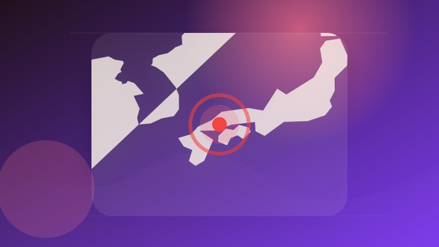
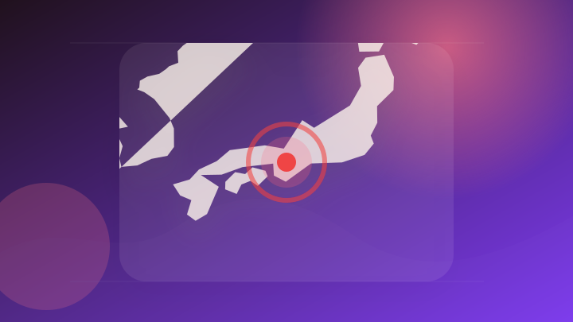
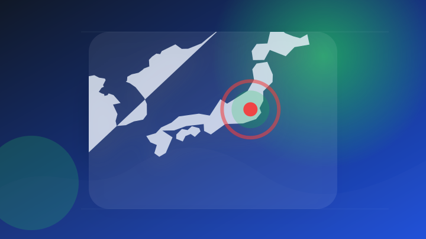
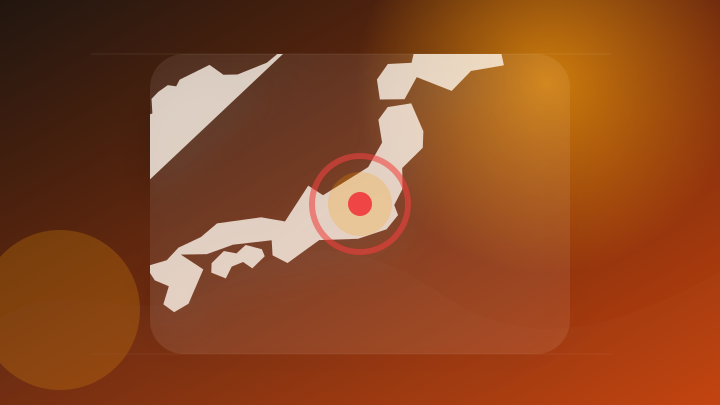
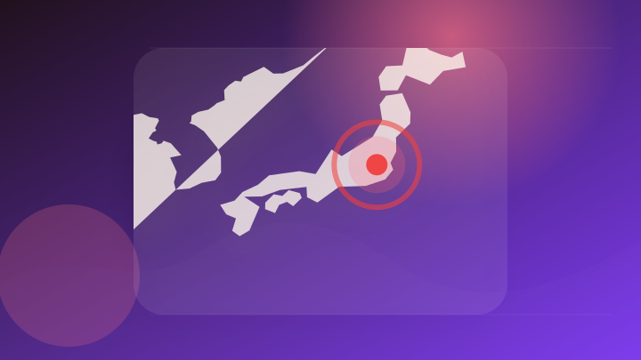
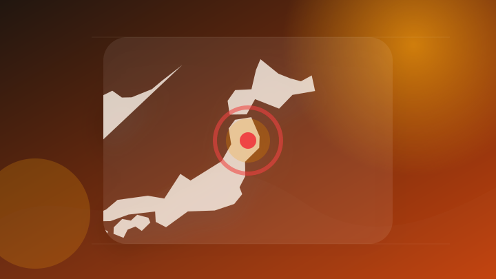

AI
2 topics
RSS RSS説明 仕事で使える 注目度34
【緊急】サム・アルトマン「この仕事は消えます」OpenAIが予測するAIに奪われる職業リスト完全版。 Heatwave (Jmt9zw66Jw) - Mshale
【緊急】サム・アルトマン「この仕事は消えます」OpenAIが予測するAIに奪われる職業リスト完全版。 Heatwa…
- 注目ポイント
- OpenAI｜注目度 34点｜出典: Mshale
- 見るべきポイント
- 元記事で一次情報、発表主体、更新時刻を確認。
一次情報 RSS説明 仕事で使える 注目度31
Google VidsがGemini Omni対応、自撮り写真から自分そっくりのAIアバター動画を生成可能に - BigGo ファイナンス
Google VidsがGemini Omni対応、自撮り写真から自分そっくりのAIアバター動画を生成可能に Bi…
- 注目ポイント
- AI・Google｜注目度 31点｜出典: BigGo ファイナンス
- 見るべきポイント
- 元記事で一次情報、発表主体、更新時刻を確認。
IT業界
2 topics
RSS RSS説明 要注意 注目度25
プレス発表 「東北サイバーセキュリティシンポジウム2026」を仙台市で開催 - ニコニコニュース
プレス発表 「東北サイバーセキュリティシンポジウム2026」を仙台市で開催 ニコニコニュース
- 注目ポイント
- セキュリティ・発表｜注目度 25点｜出典: ニコニコニュース
- 見るべきポイント
- 元記事で一次情報、発表主体、更新時刻を確認。
大手報道 RSS説明 要注意 注目度22
NEC、次世代サイバーセキュリティサービス「CyIOC」がMM総研大賞2026にて最優秀賞 - 時事ドットコム
NEC、次世代サイバーセキュリティサービス「CyIOC」がMM総研大賞2026にて最優秀賞 時事ドットコム
- 注目ポイント
- セキュリティ｜注目度 22点｜出典: 時事ドットコム
- 見るべきポイント
- 元記事で一次情報、発表主体、更新時刻を確認。
政治
2 topics
社会
2 topics

大手報道 RSS説明 動向確認 注目度39
広島の放火殺人、元従業員の男を再逮捕 容疑を否認 - 日本経済新聞
広島の放火殺人、元従業員の男を再逮捕 容疑を否認 日本経済新聞
- 注目ポイント
- 逮捕｜注目度 39点｜出典: 日本経済新聞
- 見るべきポイント
- 元記事で一次情報、発表主体、更新時刻を確認。

大手報道 RSS説明 動向確認 注目度39
女性の遺体を遺棄した疑い、奈良の37歳男を逮捕 母と娘が行方不明 - 朝日新聞
女性の遺体を遺棄した疑い、奈良の37歳男を逮捕 母と娘が行方不明 朝日新聞
- 注目ポイント
- 逮捕｜注目度 39点｜出典: 朝日新聞
- 見るべきポイント
- 元記事で一次情報、発表主体、更新時刻を確認。
災害
2 topics

RSS RSS説明 要注意 注目度42 2媒体
【次は “越境台風”か】3年ぶりに“ハリケーン”が「日付変更線」を超えて来る越境台風の可能性【雨風シミュレーション28日（火）まで/全国各都市の週間予報】「今後の台風情報に注意」（MBC南日本放送） - Yahoo!ニュース
【次は “越境台風”か】3年ぶりに“ハリケーン”が「日付変更線」を超えて来る越境台風の可能性【雨風シミュレーション…
- 注目ポイント
- 台風｜独立2媒体｜注目度 42点｜出典: Yahoo!ニュース
- 見るべきポイント
- 元記事で一次情報、発表主体、更新時刻を確認。

大手報道 RSS説明 要注意 注目度39
群馬 前橋市に土砂災害危険警報を発表 土砂災害に厳重警戒を - NHKニュース
群馬 前橋市に土砂災害危険警報を発表 土砂災害に厳重警戒を NHKニュース
- 注目ポイント
- 災害・発表｜注目度 39点｜出典: NHKニュース
- 見るべきポイント
- 元記事で一次情報、発表主体、更新時刻を確認。
金融
2 topics

大手報道 RSS説明 制度・政治 注目度38 2媒体
高市首相、GPIFによる日本の金融資産への投資後押しする方策重要 - Bloomberg.com
高市首相、GPIFによる日本の金融資産への投資後押しする方策重要 Bloomberg.com
- 注目ポイント
- 高市首相・GPIFによる日本の金融資産への投資後押しする方策重要｜独立2媒体｜注目度 38点｜出典: Bloomberg.com
- 見るべきポイント
- 元記事で一次情報、発表主体、更新時刻を確認。
大手報道 RSS説明 仕事で使える 注目度30
MUFGがGoogleと戦略的提携 リテール総合金融、AIでSMBCより「先行」狙う - 日経クロステック
MUFGがGoogleと戦略的提携 リテール総合金融、AIでSMBCより「先行」狙う 日経クロステック
- 注目ポイント
- AI・Google｜注目度 30点｜出典: 日経クロステック
- 見るべきポイント
- 元記事で一次情報、発表主体、更新時刻を確認。
ライフ
2 topics

RSS RSS説明 動向確認 注目度34
韓国籍の無職の男（66）生活保護を巡ってトラブルか 対応した市職員を殴った公務執行妨害の疑いで逮捕 容疑認める 岩手・盛岡市 - TBS NEWS DIG
韓国籍の無職の男（66）生活保護を巡ってトラブルか 対応した市職員を殴った公務執行妨害の疑いで逮捕 容疑認める 岩…
- 注目ポイント
- 逮捕｜注目度 34点｜出典: TBS NEWS DIG
- 見るべきポイント
- 元記事で一次情報、発表主体、更新時刻を確認。
一次情報 RSS説明 動向確認 注目度23
海洋の健康診断表 北西太平洋の海面水温 - data.jma.go.jp
海洋の健康診断表 北西太平洋の海面水温 data.jma.go.jp
- 注目ポイント
- 海洋の健康診断表・北西太平洋の海面水温｜注目度 23点｜出典: data.jma.go.jp
- 見るべきポイント
- 元記事で一次情報、発表主体、更新時刻を確認。
経済
2 topics
RSS RSS説明 仕事で使える 注目度33 2媒体
粉飾決算事件 AI開発企業「オルツ」元社長、初公判で起訴内容認める（2026年7月17日掲載）｜日テレNEWS NNN - 日テレNEWS NNN
粉飾決算事件 AI開発企業「オルツ」元社長、初公判で起訴内容認める（2026年7月17日掲載）
- 注目ポイント
- 決算・AI｜独立2媒体｜注目度 33点｜出典: 日テレNEWS NNN
- 見るべきポイント
- 元記事で一次情報、発表主体、更新時刻を確認。
大手報道 RSS説明 仕事で使える 注目度30
AI企業「オルツ」粉飾決算事件 前社長が初公判で起訴内容認める - テレ朝NEWS
AI企業「オルツ」粉飾決算事件 前社長が初公判で起訴内容認める テレ朝NEWS
- 注目ポイント
- 決算・AI｜注目度 30点｜出典: テレ朝NEWS
- 見るべきポイント
- 元記事で一次情報、発表主体、更新時刻を確認。